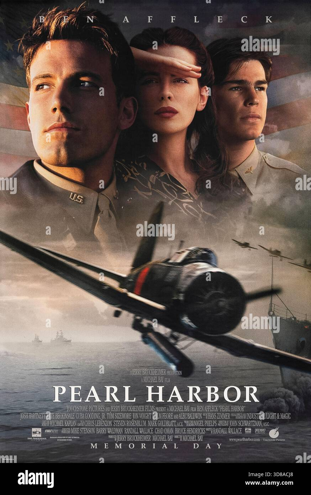

"Pearl Harbor" é um filme épico de guerra lançado em 2001, dirigido por Michael Bay. O filme retrata o ataque surpresa dos japoneses à base naval americana de Pearl Harbor, no Havaí, em 1941. A história segue dois amigos de infância, Rafe McCawley e Danny Walker, que se tornam pilotos da Força Aérea dos Estados Unidos. O filme combina ação intensa, romance e drama, mostrando os eventos históricos do ataque e suas consequências.
Drama, Ação, Guerra
2001
Michael Bay
O filme começa com a amizade entre Rafe e Danny, que sonham em se tornar pilotos. Rafe é enviado para a Inglaterra para lutar contra os alemães, enquanto Danny permanece em Pearl Harbor. O ataque japonês muda tudo, levando os dois amigos a enfrentar desafios inimagináveis e a lutar pela sobrevivência. O filme é conhecido por suas cenas de ação impressionantes e efeitos visuais, além de sua representação dramática dos eventos históricos.